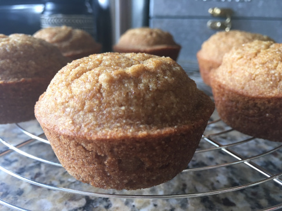

Agave Cornbread

Description
This vegan cornbread is made with whole-wheat flour and sweetened with agave syrup. It got votes as being better than traditional cornbread muffins by my anti-vegan roommates! They can also be made macrobiotic if you substitute the agave with maple syrup.
Ingredients
- ½ cup whole-wheat pastry flour
- ½ teaspoon baking soda
- ½ teaspoon salt
- ½ cup applesauce
- ½ cup soy milk
- ¼ cup agave nectar
- 2 tablespoons canola oil
Steps
- Preheat oven to 325 degrees F (165 degrees C). Lightly grease a muffin pan.
- Combine the cornmeal, flour, baking soda, and salt in a large bowl; stir in the applesauce, soy milk, and agave nectar. Slowly add the oil while stirring. Pour the mixture into the muffin pan.
- Bake in the preheated oven until a toothpick or small knife inserted in the crown of a muffin comes out clean, 15 to 20 minutes.
Index